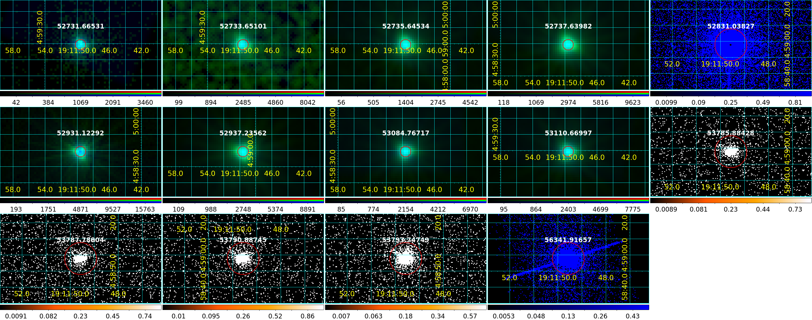
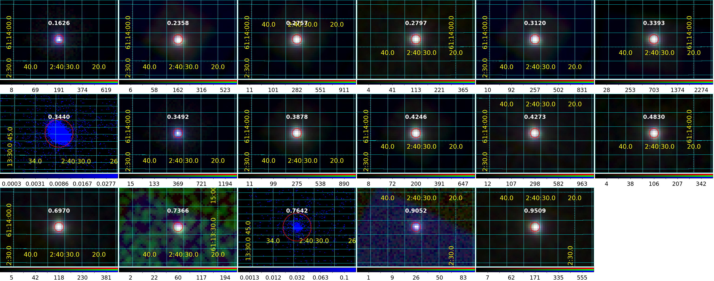
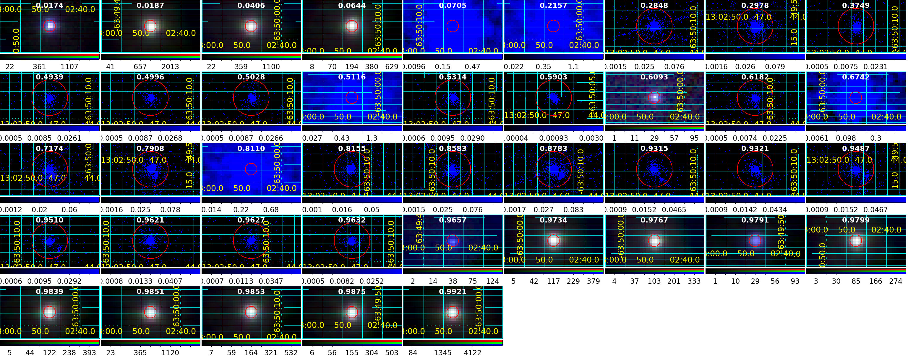

X-ray properties of Galactic HMXBs corrected by interstellar absorption
Marina Belén Badaracco · Professors: Dr. Matías Zaldarriaga & Dr. Nahuel Miron Granese
Work carried out with Claude Code 2.1.278 (Opus 5, effort high) · 28 September 2026
The column density measured towards a high-mass X-ray binary is a sum: part
interstellar, part produced by the donor's wind and the wake trailing the compact object. Only
the second is a property of the binary, and it is not constant — it varies around the orbit.
This project measures it as a function of orbital phase, homogeneously, across the
Galactic sample.
The gap this fills
Fortin et al. (2023) compile 152 Galactic HMXBs with 111 Gaia DR3 counterparts and
distances, but tabulate no X-ray flux, column density or spectral slope. Neumann et al. (2023)
give fluxes in five bands and one column density, taken from the Swift catalogue, where it
came from interpolating a power law through hardness ratios rather than from a spectral fit. For
a population lying in the Galactic plane this is the gap that matters: below about 2 keV an HMXB
spectrum is shaped more by absorption than by emission.
Doroshenko et al. (2024) make the separation possible with a pan-Galactic cumulative-reddening
cube: queried at the Bailer-Jones distance it returns the interstellar column, and the remainder
of a fitted NH is the local one. The subtraction cannot be
done with point values — the distance has an asymmetric posterior, the cube its own calibration
uncertainty, the conversion depends on the abundance table — so a Monte Carlo over distance, cube
and conversion is required for the residual to have an honest error bar.
Why the catalogue columns cannot simply be used. A catalogue
publishes a best-fit column and at most a 68 % interval; the probability distribution behind that
number is not published, neither its shape nor its covariance with the photon index. Subtracting a
distribution from a point estimate with a symmetric error bar does not propagate the error, it
invents one — and the result is then binned in orbital phase, where the scatter between bins is
the signal. The fits have to be ours, made in XSPEC with each posterior kept rather than
summarised.
Where the work stands
| Quantity | Value |
|---|
| Systems with at least one X-ray counterpart (the working sample) | 89 |
| — with a CSC 2.1.1 source / a 5XMM-DR15 source / both | 61 / 60 / 32 |
| Systems with a published orbital period | 72 |
| Published phase-zero epochs read by hand from the literature | 57 |
| — distinct conventions among them | 10 |
| Systems brought onto a common convention (periastron passage) | 33 |
| Systems with a usable orbital phase on their observations | 31 |
| Observations carrying a phase | 134 of 140 |
| Reprocessed observations (Chandra / XMM-Newton) | 194 / 193 |
| Broad-band images with source detection (Chandra / EPIC) | 193 / 561 |
| Stage 1: Chandra detections reaching the published statistic | 105 of 115 |
Bringing the orbital phases onto one convention
This is the part with no established recipe. The 57 epochs are of ten kinds — periastron
passage, mean longitude 90°, mid-eclipse, conjunctions, outburst and optical maxima, an
ellipsoidal minimum, a spectroscopic phase zero, and eight origins chosen only to fold a light
curve. A phase measured from one is not the phase measured from another, so any statement
comparing phases between systems is empty until they are referred to one point.
They are referred to the periastron passage. An epoch of mean longitude 90°
converts exactly and needs only the longitude of periastron; a conjunction or a mid-eclipse
requires the true anomaly at that configuration and then Kepler's equation. A third route needs no
geometry: Fornasini et al. (2023) state that the Type I outbursts of Be X-ray binaries happen
quasi-periodically at or near periastron, and that their recurrence is how the orbital period of
such a system is measured — so for a Be XB an epoch of maximum flux is a periastron
passage. Whether a system qualifies is decided by the catalogue's own class column, not by
judgement: five of the ten outburst epochs are adopted, the other five belong to supergiants and
SFXTs and are not.
One trap is worth stating because getting it wrong would exchange the answer with its opposite.
A longitude of periastron describes somebody's orbit, and the two possibilities differ by
exactly 180°: pulse timing gives the compact object's, radial velocities of the companion give the
donor's. The frame is recorded per system, decided from what each paper actually quotes.
What the sample looks like

SS 433 — 14 observations in time order. It has a superior-conjunction
epoch and no published longitude of periastron, so it cannot be placed on the common convention
and is ordered by MJD instead.

LS I +61°303 — 17 observations from phase 0 to ~0.99.

PSR B1259−63 — 41 observations in phase order, the largest set in the
sample.
Each tile is one observation, centred on the source
and marked with a 10″ circle; the number above it is the orbital phase, or the MJD where none
exists. The colour scale is raw counts per image pixel, uncorrected for exposure or vignetting,
square-root stretched to the 99.5th percentile of that tile alone, so brightness is not
comparable between tiles. In a three-colour tile red, green and blue are the counts of EMOS1,
EMOS2 and EPN. Mosaics are produced by Observations/Images/ds9_phase_mosaic.sh, one
command per system.
What has been checked, and what has not
Every statement in the manuscript and in the summary is traced in
PROVENANCE.md to the file and function that produced it, with the
check that was run beside it and an explicit note of what was not checked. A few examples
of the second kind, so the shape of the record is clear: no confidence limits are computed on our
own Stage 1 parameters, so the comparison is our best fit against the catalogue's interval and not
interval against interval; the ten Chandra detections that never reach the published
statistic have not been diagnosed; apsidal motion is not applied; and the systematic that rides on
the five Be outburst epochs, the width of the outburst, is not quantified.
The images are not all pointings at their system. The
observation lists hold every observation whose field covers the position, and the source lies
beyond 6 arcmin off-axis in 69 of the 193 Chandra observations and beyond 10 in 32. An empty
tile can mean the source was not detected, or that the telescope was aimed elsewhere. They are kept
and studied: a large off-axis angle belongs in the error budget of a measurement, not in a cut on
the sample.